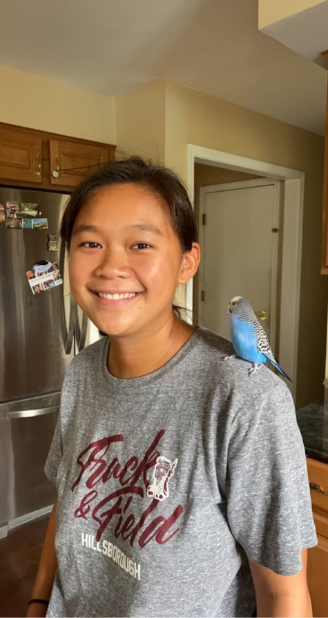
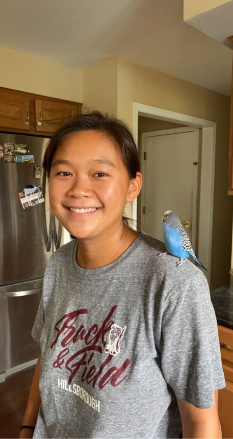
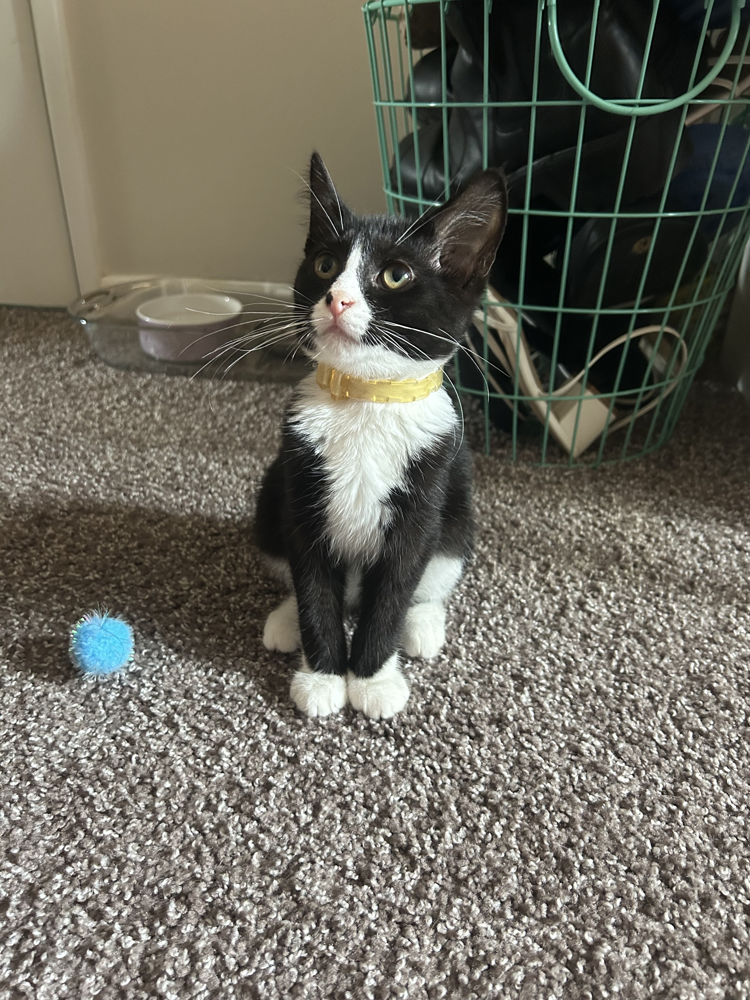
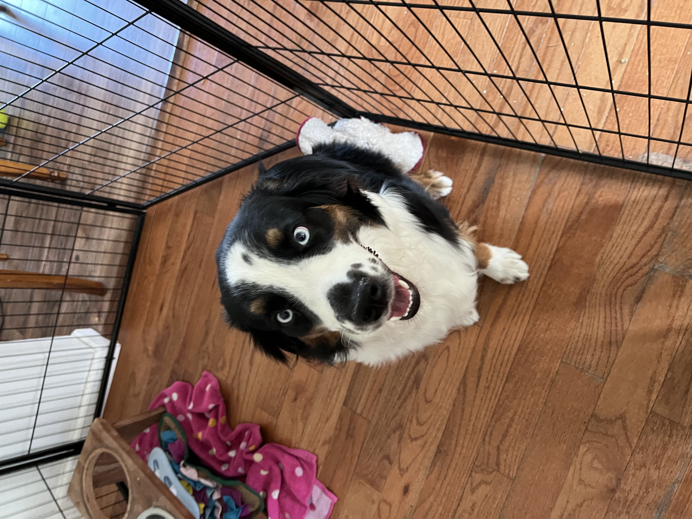
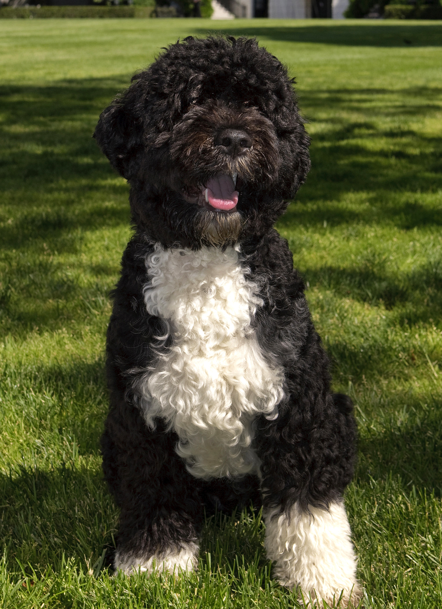
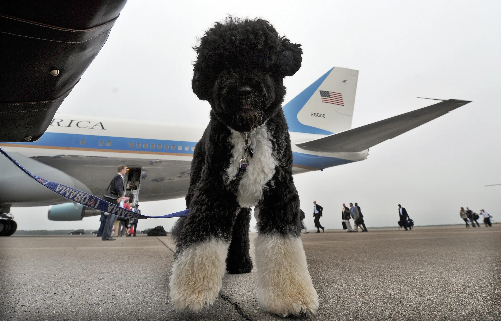
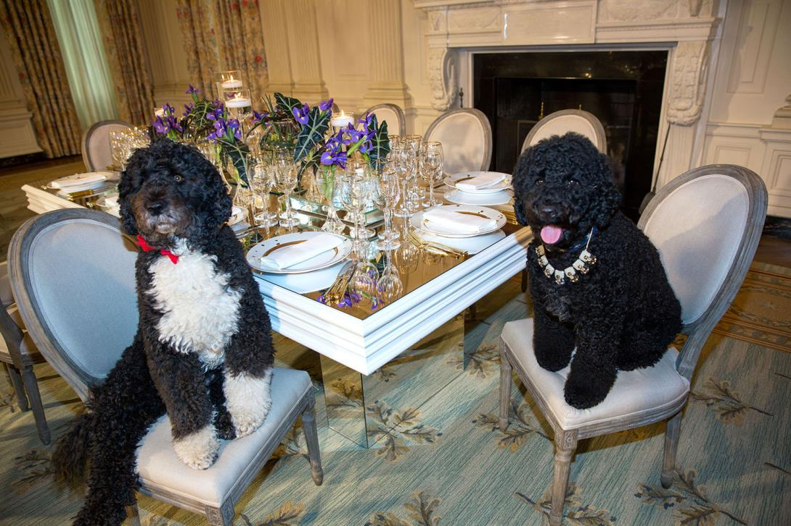
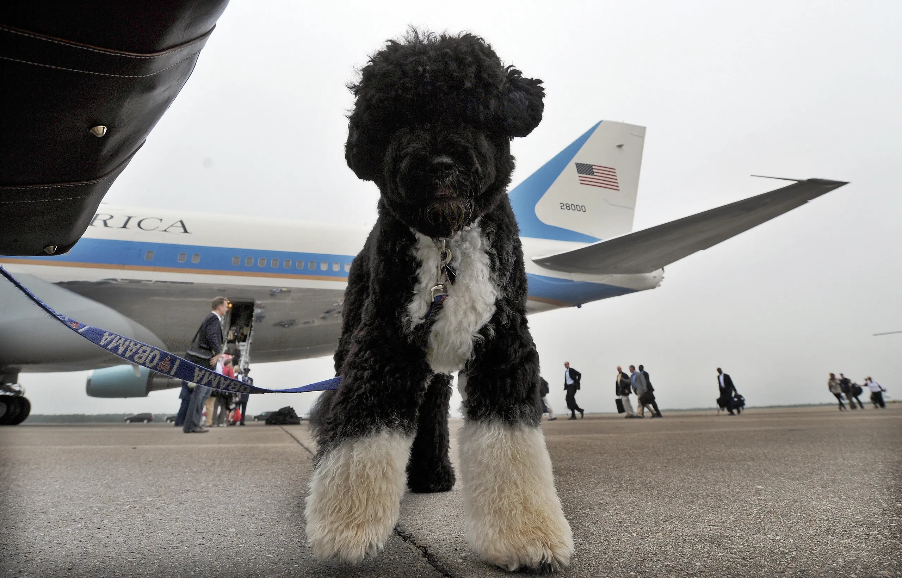
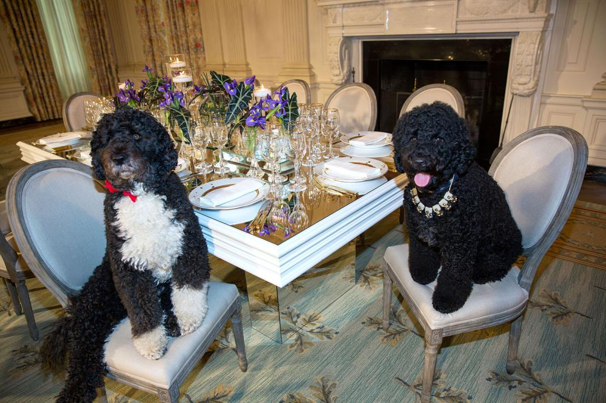

Carlos

Carlos is a blue parakeet/budgerigar that my older sister adopted from her friend in high school. Carlos is 9 years old and loves flying around the kitchen and standing on chandeliers. Shehas very loud chirps and loves to chatter when people play instruments. Although she can be aggressive at times and is very unfriendly towards strangers, she has a very soft bite.
Carlos has a sister named Einstein. We did not discover the genders of our pet birds until years after we named them. At night, Carlos always sleeps on her favorite yellow swing and will wake up in the same spot every morning in the upstairs of her cage ready to come out and play.
Photo Gallery

 


Likes
- Spinach
- Flying around
- Taking baths
Jax
Jax is a kitten, about five months old that I found this summer at a gas station while traveling to Marquette, Michigan. He was scared and malnourished, crying in the parking lot. I took him with me and after some healthy meals and a trip to the vet he is doing great!
My roommates and I just recently moved and Jax has been having a hard time getting used to the large house since we were previously living in a small apartment. Jax is incredibly playful and loves to run around, but when he is sleepy he is happy to be held.
Photo Gallery


Likes
- Toys
- Going outside
- Attention
Cheeto (Chicken)

Cheeto is a cat who likes to eat a lot and play a lot. He has an obsession with his grandpa (human) and tries to get outside every single day. If he isn’t causing problems, he is usually hiding in a seven foot tall cat tree and sleeping.
Another name for Cheeto is Chicken, because sometimes he sits very scrunched up and ends up looking like a rotisserie chicken. He was nicknamed this by one of his friends, and now he understands it as his own name. He is about six years old and still acts like a younger cat, despite being middle-aged.
Photo Gallery


Likes
- Treats
- Exploring
- My Dad
Milktea

Milktea is a Scottish fold with a personality of a princess. She loves her veggies and refuses to eat anything dropped on the ground. She makes it clear when she has a demand of any sort by complaining in a loud, distinguished manner. If what she says could be translated, it probably would be, “This is atrocious, the water container has been empty for the 3rd time this week. I want to see the manager.”
Despite her cuteness and royalty, she actually suffers from a genetic disorder intentionally brought upon by humans. I highly advise against keeping a Scottish fold because they are in constant pain when they reach around 2 years old. Cartilage accumulates around her paw joints and tail joints and it becomes painful for them to even walk. She is living evidence of human’s cruelty of breeding animals to look pretty while sacrificing the animals’ health.
Photo Gallery


Likes
- She loves individual corn kernels served on human hands
- She enjoys sitting royally on suitcases to claim ownership of her humans
- She prefers to be alone and sit on soft surfaces in her free time
Dollar
Dollar is a 1 and a half year old Australian shepherd. His favorite games are tug of war and fetch. Sometimes, when he goes out for walks, he will pick up a stick to get his owners to play fetch with him. At night, he likes to cuddle with his owners. He would snuggle up and put his nose on their arm to let them know that he wants pets. ”
Dollar has a gourmet taste for food. He hates eating kibble and will only eat premium chicken bits with eggs. His favorite snacks are bell peppers, beef bits, and peanut butter. Dollar is incredibly smart and will only do tricks when you present him with snacks.
Photo Gallery

Likes
- Bacon Bits
- Taking walks in the park
- Jumping on the sofa
Finn

Finn is a 7 year old grey cat. I feel like no one really knows cat breeds so I’m just gonna go with grey. He loves doing tricks for treats and his favorite is giving high fives to people. He might as well be a dog as he loves the outdoors and meeting new people. I can only describe him as goofy and chaotic.
Finn’s biggest enemy is his vet. I don't know whether or not it’s because his vet is an MSU alum, but he doesn’t like him. He actually has to be prescribed a sedative before he goes to the vet office because he’ll suddenly act like he was never a house cat for 7 years.
Photo Gallery


Likes
- Belly rubs
- Head Rubs
- Sleeping in cardboard boxes
Bo
Bo is a Portuguese Water Dog with black and white fur. His paws are white too, so they always get dirty when outside. He is 12 years old, but he still likes to run around outside a lot.
He has an abundance of toys but only likes to play with a couple. He enjoys going on walks and especially on trails in the woods. He has a few dog friends that he likes to go on playdates with as well.
Photo Gallery

 



Likes
- Walks
- The Sun
- Treats